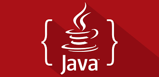

Olá Mundo!
Esse site foi criado para a ala de FUNDAMENTOS WEB pelo curso Java da Generation
Adrielly
Meu nome é Adrielly Ribeiro, tenho 22 anos e sou da baixada Santista
Jornada
Meu interesse por programação começou na adolescência, quando ao ganhar o meu primeiro computador,
quando abri o Google eu sem querer e sem saber, abri a aba de inspecionar.
Não vou negar, no começo achei que tinha quebrado o Google, depois que eu deixei a
curiosidade falar mais alto, foi ai que eu descobri o que eu queria ser.
Bom, Minha jornada na programação começou com os meus 19 anos, quando me formei em Técnica de programação
em jogos digitais, pela ETEC de cubatão. Em jogos, tive aulas sobre MySQL, LINGUAGUEM C# E UNITY.
Em 2021 me formei como Tecnólogo de Produção Multimídia, na Universidade Unisanta.
Alem de ter conhecimento sobre ferramentes voltadas para area de multimidia, também obtive conhecimentos
sobre HTML, CSS E BOOTSTRAP 3.
Durante essa jornada, concluir o meu curso de Ingles pela escola CCAA DE CUBATÃO.
Logo, em seguida, comecei mais um novo ciclo, tive a oportunidade da minha vida.
Ao ingressar em um Bootcamp pela Generation, onde me formei como Desenvolvedora
Fullstack Java Junior. O Bootcamp foi o divisor de águas em minha vida. Durante o curso,
conheci novos programas e linguagens como, por exemplo. Spring Tools, Eclipse, banco de dados
entre outros. E não só isso, também trabalhei com o meu lado mais humano nas aulas sobre BSM.
Conhecimentos
Java Fullstack

O que é Java Full Stack?
Full Stack é o profissional capaz de operar em todas as etapas de desenvolvimento de um projeto. Sua capacidade de enxergar o projeto como um todo, do Front ao Back-end, é um diferencial estratégico para as empresas, especialmente quando se trata de Java.